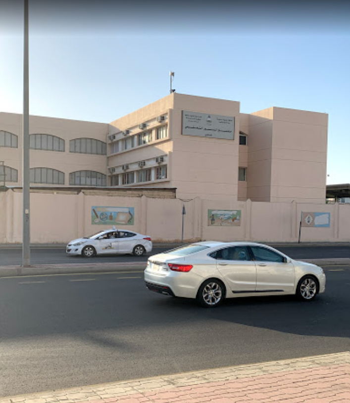
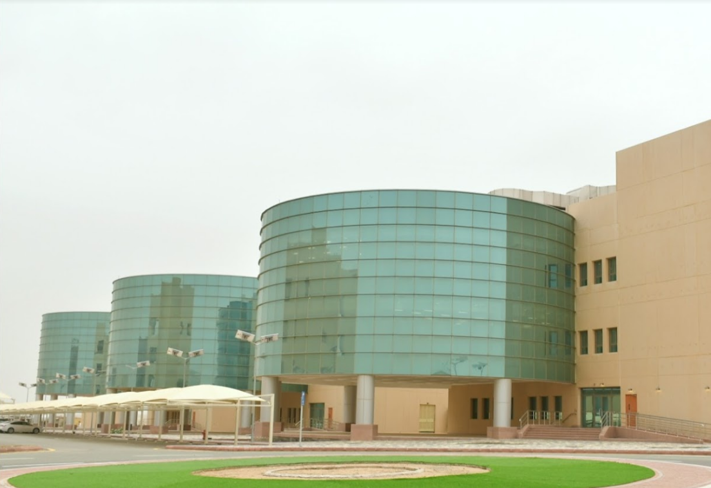

High School:
As of now, I am technically a high school graduate with only my high
school degree if I try to pursue work.
I studied in
Al Noor School
for all of my pre-uni academic life. It's a cozy school with pretty good
teachers who did their best, and I came out relativley on top. Through
this school I was able to learn english and hone and perfect it over
time.

University:
I am currently studying in the
University of Jeddah
(UJ) and pursuing a bachelor's degree in Software Engineering.
Studying in UJ can be very tough considering it's located in the middle
of nowhere, but I've been attending it for 4 years now which shows how
dedicated I am.
Putting the grueling road aside, studying in UJ has been quite the
challenge due to its strict curriculum, difficult yet informative
professors, and challenging tasks that are guaranteed to enhance your
skills.
